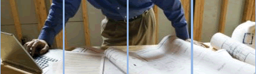

Escuchamos su idea
Cada proyecto parte de sus necesidades, ideas y objetivos.
Empresa
Somos una empresa 100% salvadoreña con más de 24 años de experiencia en el mercado del prefabricado, con valores cristianos como base de nuestro trabajo.
Nos dedicamos a la fabricación, diseño y construcción de tapiales, casas prefabricadas y cualquier otro proyecto de construcción que nuestros clientes nos confían.

Cómo trabajamos
Cada proyecto parte de sus necesidades, ideas y objetivos.
Transformamos la visión del cliente en una solución constructiva práctica.
Combinamos prefabricados, acabados y experiencia de obra para hacerla realidad.